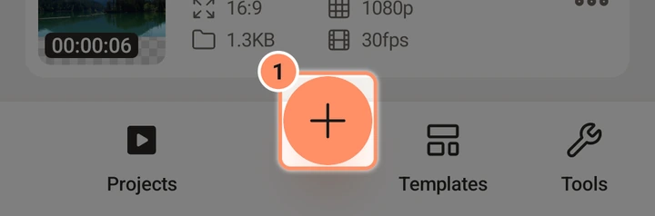

Aan de slag
Installeer AbsentMotion, maak je eerste project, animeer iets en exporteer het.
Op deze pagina
Installeren
AbsentMotion staat al op deze telefoon. Op deze pagina maak je stap voor stap een eerste project. De andere pagina's beschrijven elk scherm.
De eerste keer openen
Als je de app voor het eerst opent, zie je eerst twee schermen en daarna pas het startscherm.
- Kies je taal. De app heeft 26 talen: Engels, Indonesisch, Hindi, Portugees (Brazilië), Spaans (Latijns-Amerika), Spaans (Spanje), Filipijns, Vietnamees, Thai, Maleis, Arabisch, Perzisch, Urdu, Turks, Russisch, Bengaals, Japans, Koreaans, Chinees (traditioneel), Chinees (vereenvoudigd), Frans, Duits, Italiaans, Pools, Nederlands en Oekraïens. Heeft de app de taal van je telefoon, dan staat die bovenaan. Je kunt de taal later wijzigen in Instellingen.
- Bekijk wat dit apparaat kan. Een korte test laat zien welke videoformaten en afmetingen je telefoon kan exporteren en hoe snel hij is (Snel, Goed of Basis). De test draait één keer, duurt een paar seconden en alles blijft op je telefoon. Je kunt ook op Overslaan tikken. Op hetzelfde scherm staat een schakelaar waarmee de app bij elke start één keer aan GitHub vraagt wat het nieuwste versienummer is. Hij staat standaard aan en stuurt verder niets.
Bij de start vraagt de app nergens toestemming voor. Toegang tot foto's, video, audio, camera en microfoon wordt pas gevraagd als je voor het eerst iets gebruikt dat die toegang nodig heeft.
Je eerste project maken
- Tik op het startscherm onderaan op de ronde knop +. Dit is Nieuw project.
- Kies een beeldverhouding (16:9, 9:16, 4:5, 1:1 of 4:3), een resolutie (1080p is een goed begin) en een achtergrond. Twijfel je over de framesnelheid? Laat die dan zoals hij is. Tik op PROJECT MAKEN. De editor opent met een leeg project. Meer uitleg: Een project maken.
- Tik rechtsonder in het tijdlijngebied op de ronde + en kies wat je wilt toevoegen: een vorm, een foto of video uit het tabblad Media, of Tekst.
- Sleep in het voorbeeld om de laag te verplaatsen. Knijp met twee vingers om hem groter of kleiner te maken.
- Sleep naar links of rechts over de tijdlijn om door de tijd te gaan. Wil je een laag in de tijd verschuiven? Houd de balk ingedrukt en sleep. Bijsnijden doe je door de laag te selecteren en de ronde grepen aan de uiteinden te verslepen.
- Druk op de afspeelknop om het resultaat te bekijken.


Er is geen knop om op te slaan. Het project wordt vlak na elke wijziging vanzelf opgeslagen.
Iets animeren
Animatie in AbsentMotion werkt met keyframes. Een keyframe bewaart een waarde (een positie, een grootte, een dekking) op één moment. De app vult de beweging tussen de keyframes zelf in.
- Tik op een laag in het voorbeeld of op de tijdlijn. Onderaan verschijnt een raster met tools.
- Tik op Transformeren. Het tabblad Verplaatsen is open.
- Zet de afspeelkop op het punt waar de beweging moet beginnen en tik op de keyframeknop (het ruitje) in de linkerkolom.
- Zet de afspeelkop verderop en sleep de laag naar een nieuwe plek. De eigenschap heeft al een keyframe, dus er wordt automatisch een tweede gemaakt.
- Speel het af. Tik op de easingknop (de curve) om de beweging te laten versnellen, vertragen of stuiteren. Zie Keyframes en easing.

Wil je snel resultaat? Selecteer een laag en tik rechtsonder in het voorbeeld op de ronde knop Animeren. Kies dan een In-, Uit- of Lus-animatie. Of open Effecten en probeer een van de bewegingseffecten.
Exporteren
- Tik op het deelicoon in de bovenbalk (het heet Exporteren en delen).
- De kaart Video is geselecteerd. Tik op Exporteren.
- Wacht tot de voortgangsbalk vol is. Je kunt intussen een andere app gebruiken: een melding laat de voortgang zien.
- Tik op Video delen, of zoek het bestand op in Movies/AbsentMotion.

Alle opties (formaten, resolutie, framesnelheid, GIF, alleen audio) staan op de pagina Exporteren.
Waar vind je wat?
| Ik wil | Ga naar |
|---|---|
| Een project beginnen | + op het startscherm |
| Een laag toevoegen | + in de editor (zichtbaar als er niets is geselecteerd) |
| Een laag aanpassen | Tik erop en gebruik het toolraster |
| Animeren | De keyframeknop in een paneel, of de knop Animeren |
| Een effect toevoegen | Selecteer een laag, Effecten, Effect toevoegen |
| Ongedaan maken | De eerste knop van de afspeelbalk |
| Exporteren | Het deelicoon in de bovenbalk |
| Een instelling wijzigen | De menuknop linksboven op het startscherm |
Verder lezen
- Het startscherm en het editorscherm laten elke knop zien.
- Effecten gebruiken legt de effectenbibliotheek uit.
- Problemen oplossen en vragen geeft antwoorden op veelvoorkomende problemen.